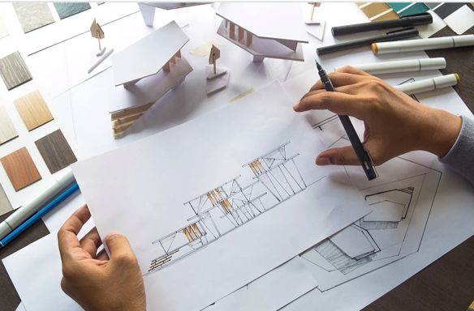

Nama saya Lee Jeno. Saya lahir di Incheon, Korea Selatan, pada tanggal 23 April 2000. Dibesarkan sejak kecil di Ilsandong-gu, Goyang-si, Gyeonggi, Korea. Saya adalah anak bungsu, kakak saya lebih tua dua tahun memiliki kakak perempuan yang lebih tua dua tahun. Dulu saya senang berakting, waktu kecil saya pernah bermain dalam film layar lebar berjudul LOVE ME NOT. Akan tetapi semenjak saya begabung dengan NCT, saya menjadi lebih fokus berkarier sebagai idol Kpop NCT.Tidak hanya berakting saja, saya juga mempunyai bakat lainnya seperti pada acara M COUNTDOWN saya kerap kali menjadi mc acara tersebut dengan Doyoung dan Haechan. Selain itu, saya juga pernah menjadi mc pada acara THE SHOW tahun 2018-2019 bersama dengan Yeun CLC.
Cita-cita saya bukan menjadi idol Kpop melainkan menjadi arsitek dan designer mobil. Karena saya suka dengan mobil dan dunia otomotif. Buah favorit saya adalah semangka. Tentu saja ice cream adalah makanan penutup favorit dengan sprite sebagai minumannya. Saya memiliki alergi kucing, tetapi keluarga saya merawat tiga kucing di rumah. Kucing-kucing itu diberi nama Bongsik, Lal-ie, dan Seol-le. Mereka sangat lucu sehingga saya tetap mengelusnya menggunakan masker agar tidak bersin-bersin. Saya memiliki ketakutan terbesar dalam hidup yaitu tidak bisa bernapas dan kehilangan orang yang saya sayangi.